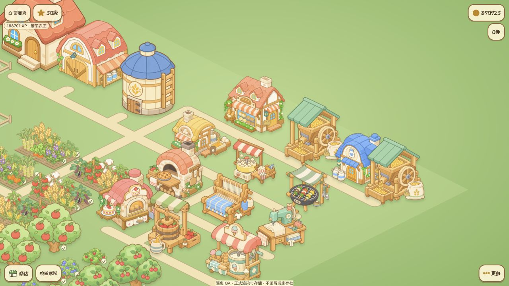

<!doctype html><html lang="zh-CN"><meta charset="utf-8"><meta name="viewport" content="width=device-width,initial-scale=1"><title>农场小工坊 · 扩展界面</title><link rel="stylesheet" href="source/sample.css?rev=3"><link rel="stylesheet" href="source/pages.css?rev=3"><main class="farm-stage"><section class="production-panel expansion-panel" role="dialog" aria-label="农场操作界面样板"></section><button class="reopen" hidden><i class="skin" data-art="button-secondary-default"></i><span data-export-text>重新打开</span></button></main><div class="review-feedback" role="status"></div><script type="module" src="source/pages.js?rev=3"></script></html>
